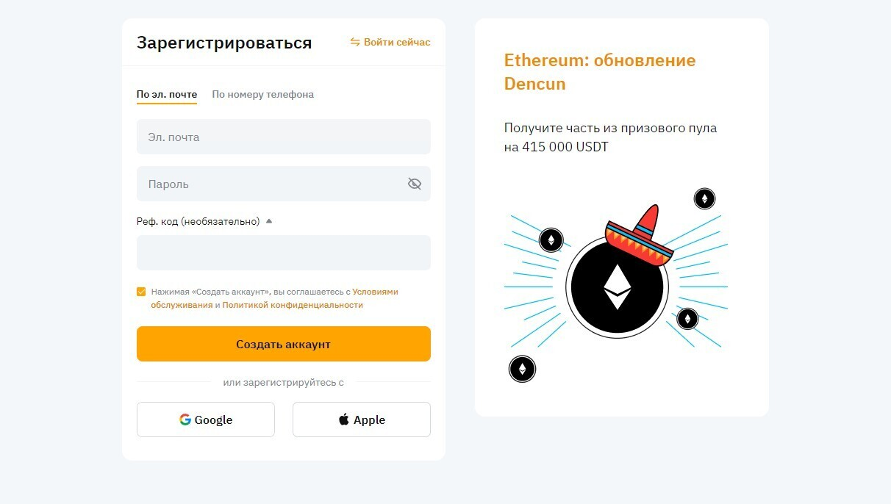
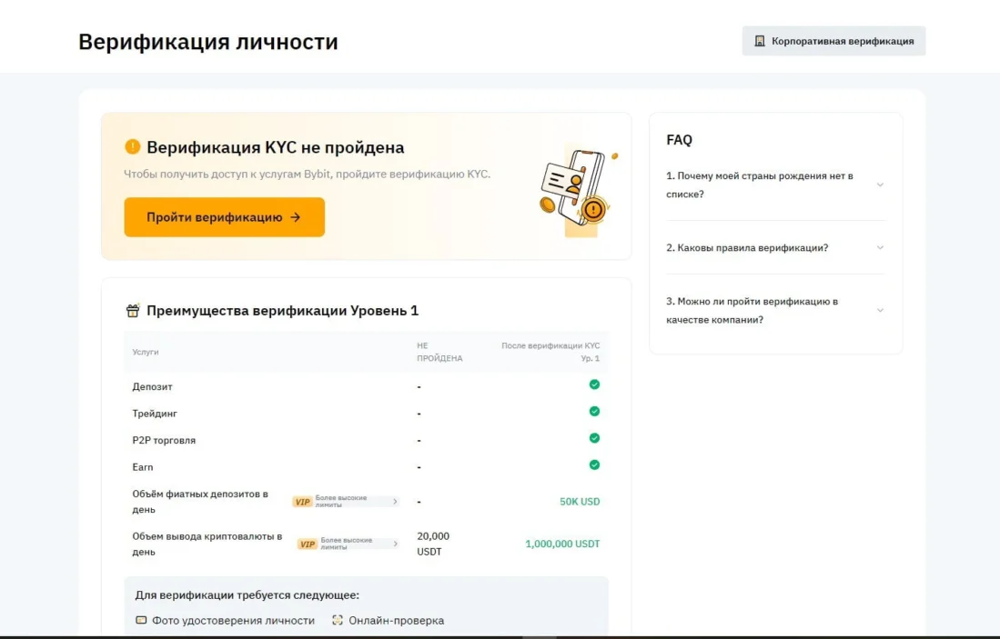

Инструкция для новичков: как зарегистрироваться и пройти верификацию на криптовалютной бирже Bybit
Вступление в сферу криптовалют начинается с выбора надежного торгового ресурса, и Bybit является привлекательным выбором благодаря своей безопасности, обширному набору инструментов и интерфейсу, который удобен для новичков в торговле. В этом обзоре мы детально разберем процесс регистрации и верификации на Bybit, чтобы вы могли начать торговлю криптовалютой без непредвиденных сложностей.
зарегистрироватьсяШаг 1: Регистрация на Bybit Первый шаг к участию в торговле криптовалютами - создание аккаунта на Bybit.
1. Доступ к веб-сайту Bybit: Откройте официальный сайт https://www.bybit.com в вашем интернет-браузере. Это первоначальное действие, чтобы убедиться, что вы попадаете на правильную страницу и избегаете фишинговых сайтов.
Bybit регистрация
2. Заполнение формы регистрации: Вам будет предложено ввести свой адрес электронной почты или мобильный номер телефона и создать пароль. Убедитесь, что пароль надежный, включая комбинацию букв, цифр и специальных символов для повышения безопасности.
3. Проверка регистрации: После заполнения формы проверьте свою электронную почту или SMS-сообщения для подтверждения регистрации. Bybit отправит ссылку или код для подтверждения, который вам нужно будет ввести на веб-сайте или в приложении.
4. Вход в ваш аккаунт: После подтверждения регистрации вы получите доступ к входу в свой аккаунт Bybit, используя Предоставленные сведения для регистрации.
Этап 2: Проверка подлинности и KYCs
Для использования всех функций, предлагаемых платформой Bybit, таких как расширенные ограничения торговли и вывод средств, необходимо пройти процедуру проверки подлинности.
Bybit верификация
1. Получение доступа к профилю: Войдите в свою учетную запись и перейдите в раздел профиля или настроек безопасности, где вы найдете опцию проверки подлинности.
2. Начало процесса проверки подлинности: Нажмите на кнопку начать проверку подлинности и ознакомьтесь с требованиями. Вам потребуется предоставить изображения или сканы документов, подтверждающих вашу личность.
3. Предоставление документов: Загрузите качественные фотографии вашего документа, удостоверяющего личность (паспорт, водительское удостоверение или удостоверение личности) и документа, подтверждающего ваш адрес проживания (квитанция об оплате коммунальных услуг, выписка из банка и т. д.), если это необходимо.
4. Ожидание проверки подлинности: После предоставления документов вам потребуется подождать, пока команда безопасности Bybit их проверит. Этот процесс может занять несколько часов или несколько дней. После успешного завершения проверки подлинности вы получите соответствующее уведомление.
5. Завершение проверки подлинности: После подтверждения проверки подлинности ваша учетная запись получит полный доступ к функциональности Bybit, включая увеличенные ограничения вывода средств и возможность участия в эксклюзивных программах и предложениях.
Процесс регистрации и проверки подлинности на платформе Bybit является важным шагом для начала торговли криптовалютами. Следуя этим простым шагам, вы сможете быстро и безопасно отправиться в путешествие в мир криптовалют. Торговля. Пожалуйста, убедитесь, что все предоставленные сведения актуальны и достоверны, чтобы избежать задержек или сложностей при проверке.